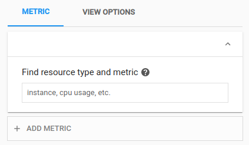
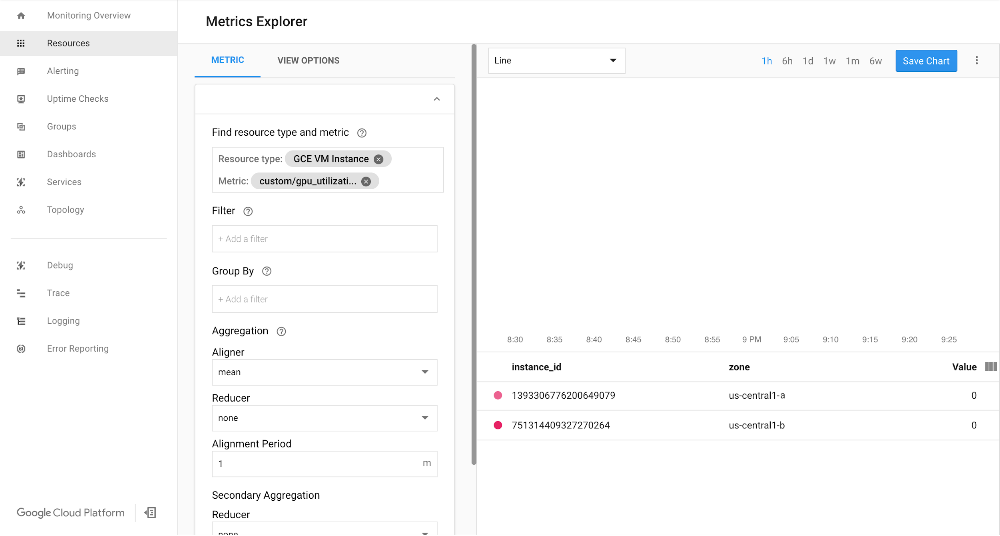
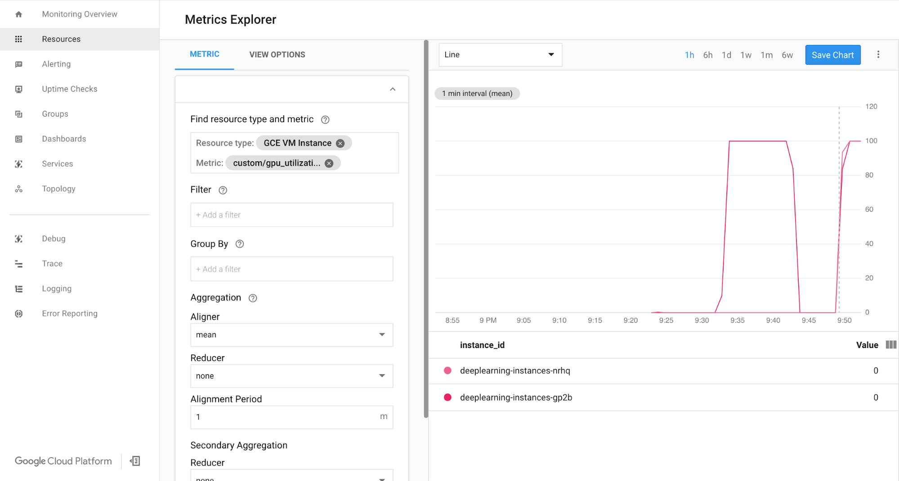

To monitor Windows metrics using Cloud Monitoring, complete the following steps:
- Set up the GPU metrics reporting script on each VM instance.
- Restart the VMs or run the following command on the VMs
C:\Program Files\Google\Compute Engine\metadata_scripts\run_startup_scripts.cmd
- View logs in Google Cloud Cloud Monitoring.
Setting up the Windows metrics reporting script
- Configure your VMs to run the script on each of your VM instances in either windows-startup-script-ps1 or windows-startup-script-url metadata
- Configure windows-startup-script-ps1 metadata
- Add Custom metadata
- Key: windows-startup-script-ps1
- Value: copy the content from the script
- Download the script
- Run the following command
gcloud compute instances add-metadata EXAMPLE_INSTANCE_NAME \
--metadata-from-file windows-startup-script-ps1=PATH_TO_FILE
- Configure windows-startup-script-url metadata
- Upload the script to your Google Cloud Storage bucket
- Add custom metadata
- Key: windows-startup-script-url
- Value: gs//bucket/your_script_filename.ps1
- Upload the script to your Google Cloud Storage bucket by running the following command
gsutil cp your_script_filename.ps1 gs://your_bucknet_name
- Run the following command
gcloud compute instances add-metadata windows2019-t4-grid \
--metadata windows-startup-script-url=gs://bucket/your_script_filename.ps1
- Restart your VM or run the following command on the VMs
C:\Program Files\Google\Compute Engine\metadata_scripts\run_startup_scripts.cmd
Reviewing metrics in Cloud Monitoring
- In the Google Cloud Console, select Monitoring, or use the following button:
Go to Monitoring
The first time you access any Monitoring functionality for a Google Cloud project, the project is associated with a Workspace. If you've never used Monitoring, then a Workspace is automatically created. Otherwise, a dialog is displayed and you are asked to select between creating a Workspace and adding your project to an existing Workspace. - In the Monitoring navigation pane, click Metrics Explorer.
- Ensure the Metric tab is selected:
 - Search for windows_*.
Note: Custom metrics might take some time to display.
 - Your GPU utilization should resemble the following output:
 - (Optional) Set up autoscaling using managed instance groups. To get started, you can review the Setting up a multiple-zone cluster section of the TensorFlow inference workload tutorial.